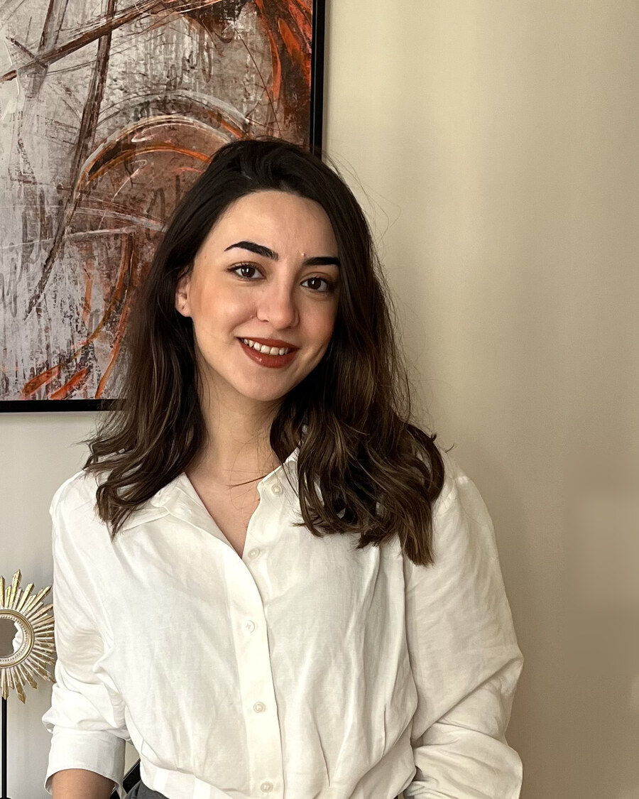
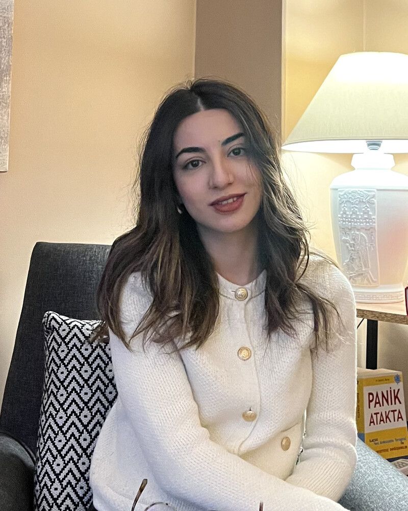
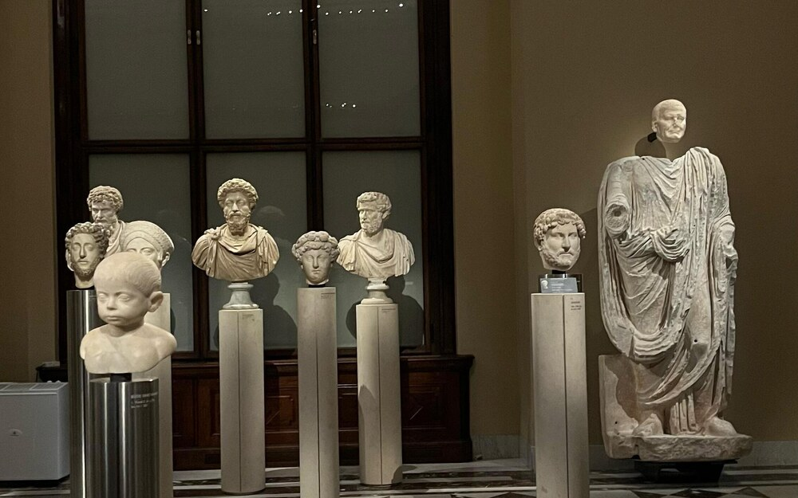
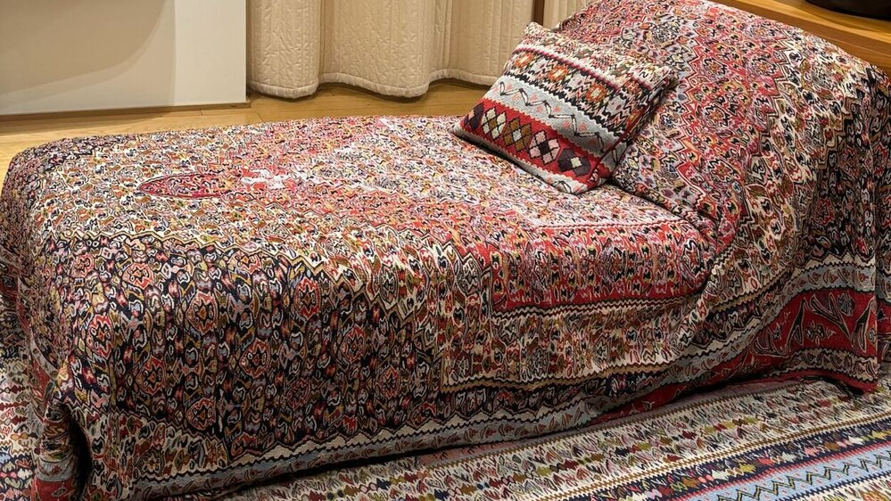
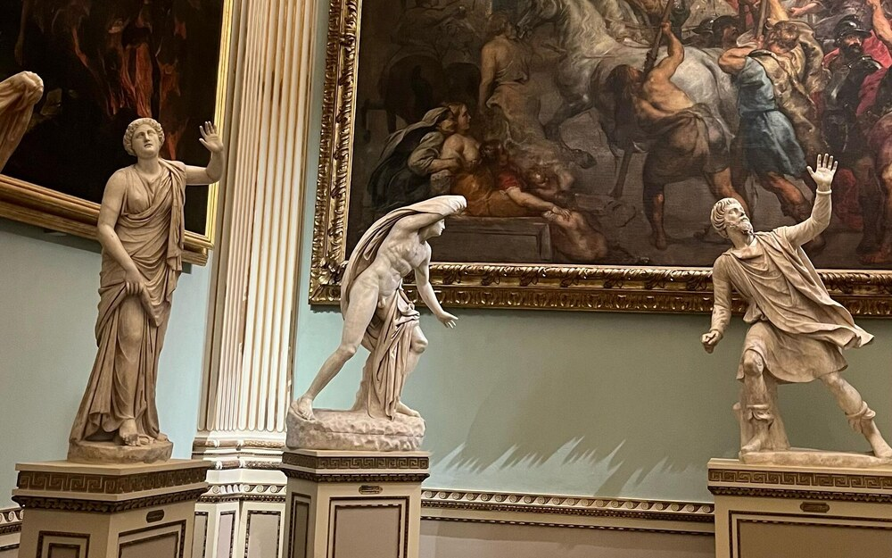

"Dünyaya fırlatılmış olsak da, bize düşen kendi yaşamımızı üstlenmek ve hayatımızın sorumluluğunu almaktır."
Heidegger ve Nietzsche'den ilhamla.
Klinik psikolog olarak yetişkinlerle çalışıyor, mesleki çalışmalarımı Berlin'de ve online olarak sürdürüyorum. Psikoterapi alanındaki yolculuğum; farklı klinik ortamlar, psikoterapi merkezleri, uzun soluklu mesleki eğitimler ve farklı insanların yaşam hikâyeleriyle şekillendi.
Bugün çalışmalarımda farklı psikoterapi yaklaşımlarından beslenen, psikodinamik ve varoluşçu perspektiflerin önemli bir yer tuttuğu bütüncül bir yaklaşım benimsiyorum. Terapi sürecinde yalnızca yaşanan güçlüklere değil; kişinin yaşam öyküsünü nasıl anlamlandırdığına, ilişki dinamiklerine, tekrar eden örüntülerine ve terapi odasında kurulan terapötik ilişkiye de önem veriyorum.
Göç ve expat deneyiminin beraberinde getirebildiği aidiyet, kimlik, yabancılık hissi, kültürel uyum ve yeniden bir yaşam kurma süreçleri de çalışmalarımda yer verdiğim temalar arasında.


Psikoloji lisans eğitimi sırasında klinik psikoloji alanındaki ilk deneyimlerinden birini İstanbul Fransız Lape Hastanesi'nde gerçekleştirdiği klinik psikoloji stajıyla edindi. Bu deneyimin ardından Üsküdar Üniversitesi'nde yetişkin odaklı Klinik Psikoloji yüksek lisans eğitimine başladı ve yüksek lisansını onur derecesiyle tamamladı. Yüksek lisans sürecinde 2018-2020 yılları arasında Üsküdar Üniversitesi Psikolojik Danışmanlık Birimi'nde süpervizyon kapsamında üniversite öğrencileriyle bireysel psikoterapi çalışmaları yürüttü; aynı dönemde NPİSTANBUL Beyin Hastanesi'nde klinik deneyim kazandı. Yüksek lisans tez çalışmasını alkol ve madde kullanım bozukluğu nedeniyle tedavi gören yetişkinlerle gerçekleştirdi.
Mesleki gelişiminin önemli bir bölümünü Kognitif Terapi ve Şema Terapi alanlarında sürdürdü. Beck Institute öğretim üyesi ve Türkiye temsilcisi Dr. Emel Stroup ile çalıştı; asistanlığı süresince CBTiSTANBUL bünyesinde psikolog ve klinisyenlere yönelik eğitim ve workshopların organizasyonunda, mesleki içeriklerin hazırlanmasında ve çeşitli klinik eğitim çalışmalarında aktif rol aldı. Bu süreçte depresyon, anksiyete bozuklukları, obsesif kompulsif bozukluk, maruz bırakma ve tepki önleme (ERP), travma sonrası stres bozukluğu ve klinik değerlendirme alanlarında Beck yönelimli Kognitif Terapi eğitimlerini tamamladı.
Şema Terapi alanında Dr. Alp Karaosmanoğlu tarafından verilen, International Society of Schema Therapy (ISST) onaylı Şema Terapi eğitim programını tamamladı. Mesleki gelişim sürecinde Dr. Judith Beck, Prof. Dr. David Veale, Dr. Gregoris Simos ve Dr. Christine Padesky gibi uluslararası alanda tanınan klinisyen ve araştırmacıların eğitimlerine ve kongre oturumlarına da katıldı. Prof. Dr. Doğan Şahin tarafından verilen Dinamik Psikoterapi Temel Eğitimini tamamlamıştır.
İstanbul'da çeşitli psikoterapi ve psikolojik danışmanlık merkezlerinde yetişkinlerle çalıştı; özellikle kaygı, depresyon, kişilerarası ilişkiler ve tekrar eden yaşam örüntüleri üzerine klinik çalışmalar yürüttü.
Şu anda yaşamını ve mesleki çalışmalarını Berlin'de sürdürmektedir. Berlin'de psikososyal destek alanında psikolojik uzman olarak yetişkinlerle çalışmakta; bunun yanı sıra online olarak yetişkin danışanlarla bireysel çalışmalarına devam etmektedir. Çalışmalarında Dinamik Psikoterapiyi temel alırken, varoluşçu ve şema terapi perspektiflerden de beslenen bütüncül bir yaklaşım benimsemektedir. Kişinin yaşadığı güçlükleri yalnızca mevcut belirtiler üzerinden değil; yaşam öyküsü, erken dönem deneyimleri, ilişkisel örüntüleri, karşılanmamış duygusal ihtiyaçları, içsel çatışmaları ve yaşamına yüklediği anlam çerçevesinde ele almayı önemsemektedir.
Aşağıdaki eğitim ve workshoplarda konuşmacı olarak yer almış, sunumları kendisi gerçekleştirmiştir.
Psikoloji öğrencilerine yönelik online olarak gerçekleştirilen "Öfke ve İntihar" başlıklı workshopta konuşmacı olarak yer aldı.
Rasyonel Psikoloji Enstitüsü bünyesinde Doç. Dr. Murat Artıran ile birlikte gerçekleştirilen workshopta konuşmacı olarak yer aldı.
CBTiSTANBUL bünyesinde ruh sağlığı profesyonellerine yönelik gerçekleştirilen webinarda, yas süreci ve yasla çalışan klinisyenlere yönelik psikoterapötik yaklaşımlar üzerine sunum gerçekleştirmiştir.
Beck Institute öğretim üyesi ve Türkiye temsilcisi Dr. Emel Stroup (ABPP, BICBT-CC, ACT) ile birlikte nokturnal panik atakların değerlendirilmesi ve Kognitif Terapi çerçevesinde ele alınmasına yönelik workshop sunumu gerçekleştirdi.
İntihar davranışının Kognitif Terapi perspektifinden değerlendirilmesi ve ele alınmasına yönelik, ruh sağlığı profesyonellerine yönelik eğitim sunumu gerçekleştirdi.
Mesleki gelişimi kapsamında katılımcı olarak yer aldığı seçili eğitim, kongre ve çalıştaylar.
Vicente Palomera · The NLS Initiative Berlin · IPU Berlin
ISST Approved Continuing Education Program · 3 saat / 3 CE kredisi · Bahar Köse & Marsha Blank
Ankara
İstanbul · Judith Beck, David Veale, Gregoris Simos, Emel Stroup ve Christine Padesky'nin seçili klinik oturumlarına katılım
Transcultural Aspects of Psychoanalysis: Theory and Methods
Mesleki çalışmalarının yanında afet ve kriz dönemlerinde psikososyal destek çalışmalarında da gönüllü olarak görev almıştır.
2023 Kahramanmaraş depremlerinin ardından Hatay'ın Defne ilçesinde depremden etkilenen bireylere yönelik gerçekleştirilen psikolojik ilk yardım projesinde klinik psikolog olarak gönüllü görev aldı. Çalışma, Mahir Yeşildal ve Prof. Dr. Arif Verimli ile birlikte yürütüldü.
Prof. Dr. Ayten Zara'nın kurucusu olduğu World Human Relief (WHR) bünyesinde, 2021 Marmaris orman yangınlarının ardından yürütülen saha çalışmalarında klinik psikolog ve eş koordinatör olarak gönüllü görev aldı. Afetten etkilenen bireylere yönelik travma odaklı psikososyal destek çalışmalarında yer aldı; akut stres ve travma sonrası stres tepkilerine ilişkin psikoeğitim çalışmaları yürüttü ve saha koordinasyonuna katkı sağladı.
Almanya'dan, güvenli video görüşme üzerinden; Türkiye'de veya yurt dışında yaşayan bireylerle çalışıyorum.
Seanslar, gizliliğe önem veren bir video görüşme altyapısı üzerinden, önceden belirlenen randevu saatinde gerçekleşir.
Türkiye'de veya yurt dışında yaşıyor olmanız fark etmiyor; randevular size uygun saat dilimine göre planlanır.
İlk görüşmede ihtiyacınızı birlikte değerlendirir, ardından size uygun sıklıkta düzenli seanslar planlarız.
Görüşmelerin içeriği, mesleki gizlilik ilkeleri çerçevesinde sizinle benim aramda kalır.

Vaka değerlendirmesi ve mesleki gelişim odaklı, meslektaşlara yönelik süpervizyon görüşmeleri.
Bilgi al
Kendi temponuzda, düzenli seanslarla ilerleyen bire bir online terapi süreci.
Randevu talep et
Kurumlara özel ruh sağlığı farkındalığı, stres yönetimi ve iletişim odaklı danışmanlık ve atölye çalışmaları.
Teklif isteRuh sağlığı, terapi süreci ve günlük yaşamla ilgili yazılar bu bölümde yayınlanacak.
En hızlı geri dönüş için WhatsApp'ı tercih edebilirsiniz. Ya da aşağıdaki formu doldurun.
En kısa sürede talebinizle ilgili geri dönüş sağlanacaktır.
Bu internet sitesi üzerinden paylaşılan kişisel verileriniz, veri sorumlusu sıfatıyla Esnayi İbrahimli Şüküroğlu tarafından 6698 sayılı Kişisel Verilerin Korunması Kanunu ("KVKK") kapsamında işlenmektedir.
İletişim: info@esnayiibrahimli.com
Web sitesi üzerinden benimle iletişime geçmeniz halinde ad-soyad, e-posta adresi, telefon numarası ve tarafınızca iletilen mesaj içeriği gibi kişisel verileriniz işlenebilir.
Web sitesindeki iletişim formu herhangi bir veri tabanına doğrudan kayıt yapmamakta; formda girilen bilgiler kullanıcının e-posta uygulaması aracılığıyla iletilmektedir.
Kişisel verileriniz;
amaçlarıyla sınırlı olarak işlenmektedir.
Kişisel verileriniz; iletişim formu, e-posta, telefon veya WhatsApp aracılığıyla elektronik ortamda ve doğrudan tarafınızca iletilmektedir.
Verileriniz, KVKK'nın 5. maddesinde belirtilen kişisel veri işleme şartları kapsamında, iletişim talebinizin yanıtlanması ve gerekli iletişimin yürütülmesi amacıyla işlenmektedir.
Kişisel verileriniz, yasal bir zorunluluk bulunmadıkça üçüncü kişilerle paylaşılmaz.
WhatsApp, e-posta veya diğer üçüncü taraf iletişim hizmetlerinin kullanılması halinde, ilgili hizmet sağlayıcılarının kendi gizlilik ve veri işleme politikaları geçerli olabilir.
Kişisel verileriniz, işlenme amaçlarının gerektirdiği süre boyunca ve ilgili mevzuat kapsamında gerekli olduğu ölçüde saklanır. İşlenmesini gerektiren sebeplerin ortadan kalkması halinde silinir, yok edilir veya anonim hale getirilir.
KVKK'nın 11. maddesi kapsamında kişisel verilerinizin işlenip işlenmediğini öğrenme, kişisel verileriniz hakkında bilgi talep etme, düzeltilmesini veya silinmesini isteme ve Kanun kapsamında sahip olduğunuz diğer hakları kullanabilirsiniz.
Bu kapsamdaki taleplerinizi info@esnayiibrahimli.com adresine iletebilirsiniz.
Web sitesinde WhatsApp, Instagram ve LinkedIn gibi üçüncü taraf platformlara yönlendiren bağlantılar bulunabilir. Bu bağlantılar üzerinden ilgili platformlara geçiş yapılması halinde, söz konusu platformların kendi gizlilik politikaları geçerlidir.
Son güncelleme: Ağustos 2026
Esnayi İbrahimli Şüküroğlu
Klinik Psikolog / Psikoterapist
Türkiye
Tel: +90 505 025 14 72
E-Mail: info@esnayiibrahimli.com
Klinik Psikolog (Türkiye)
Yüksek Lisans: Üsküdar Üniversitesi, İstanbul (Türkiye)
Bu web sitesinin içerikleri özenle hazırlanmıştır. Ancak içeriklerin doğruluğu, eksiksizliği ve güncelliği konusunda herhangi bir garanti verilmemektedir.
Bu sitede yer alan içerik ve eserler telif hakkı ile korunmaktadır. © 2026 Esnayi İbrahimli Şüküroğlu. Tüm hakları saklıdır.
Son güncelleme: Ağustos 2026